Hansa / release readiness / 6 November 2026
Status promoted default verified · not deployed · publication still gated
One Home that carries every accepted design slice at once — the R3 fan, the R4 cinematic dealer, the R5 closing and the R6 polish layer — now the default shipped build, verified end to end against the original prototype. The Atlas publication state is untouched: the public projection still carries zero concepts and zero connections, and the six-record seed is a proposal in ATLAS_SEED_PROPOSAL.md.
Design readiness and publication readiness are separate here by construction: the promoted default is a build, the publication state is data, and no build switch can turn a candidate record into a published one.
The prototype is the "before" the owner asked to recover: the identity is right, but the reader scrolls a column of widgets instead of moving through scenes. The table is the honest comparison, not a claim of wholesale improvement — the prototype's timeline and knowledge lens were reused, not reinvented.
| Aspect | Original prototype | Promoted default |
|---|---|---|
| Identity | Editorial dashboard: magnolia paper, serif headlines, one accent | Same identity, now three scenes instead of one scroll of widgets |
| Timeline | A 15-day card strip with a date rail | Desktop: fanned cards on a rail with a playhead; below 1024 px the strip stays |
| Knowledge scene | A concept panel beside a relationship web | The same lens, reveal and evidence states, with the Atlas pinned to published records only |
| Dealer | A card table below the fold, always mounted | A cinematic dialog dealt on demand; Escape, focus trap and focus return |
| Closing | A generic call to action | One idea, one action, kept cards and a coverage ledger with the denominators |
| Type and targets | Mixed 10-16 px UI text, small targets | Nine-role scale, 11 px floor for mono metadata, 44 px controls |
| Dark mode | Invert only | Full token set per scene, checked at five widths |
| Publication | Prototype drew candidate graph data directly | Public build draws nothing unpublished; the review route is pruned to 404 |
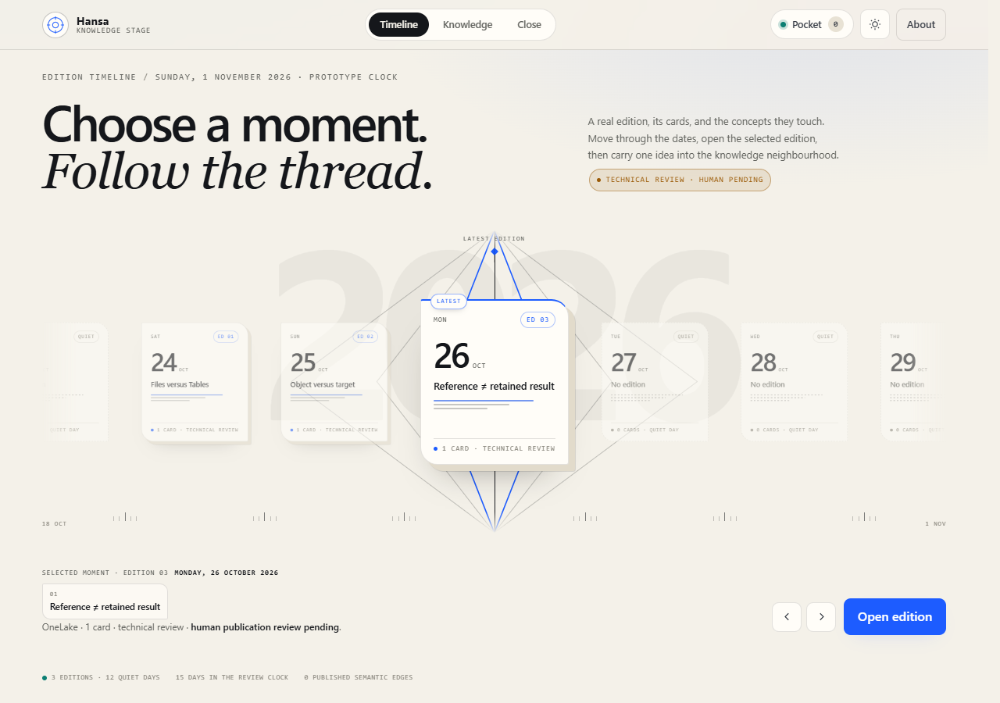
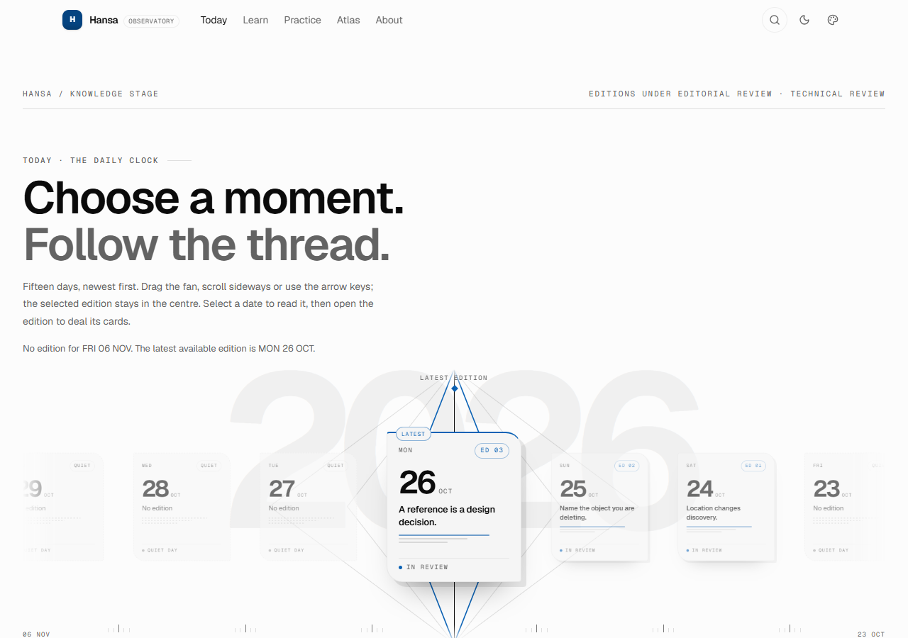
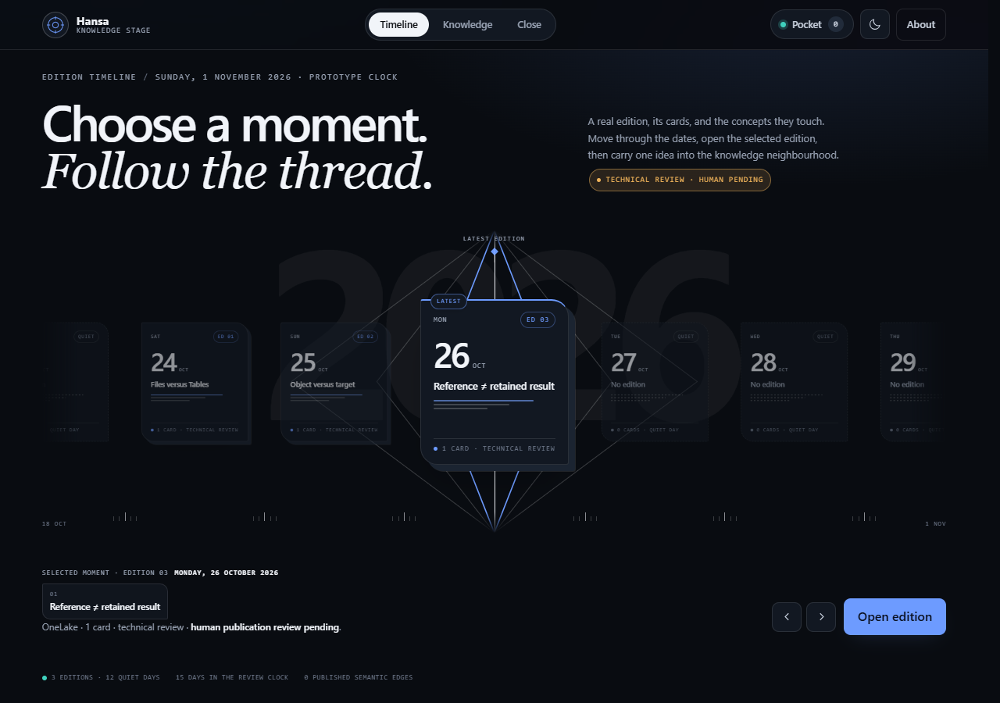
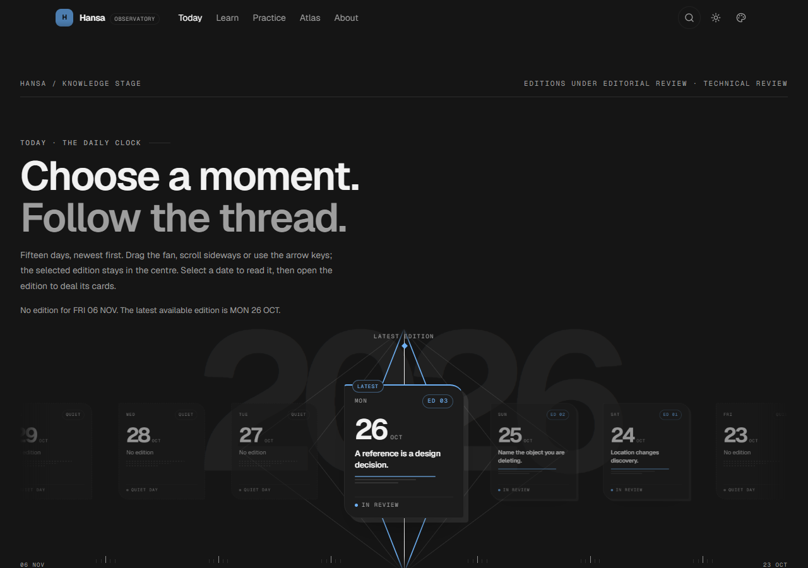
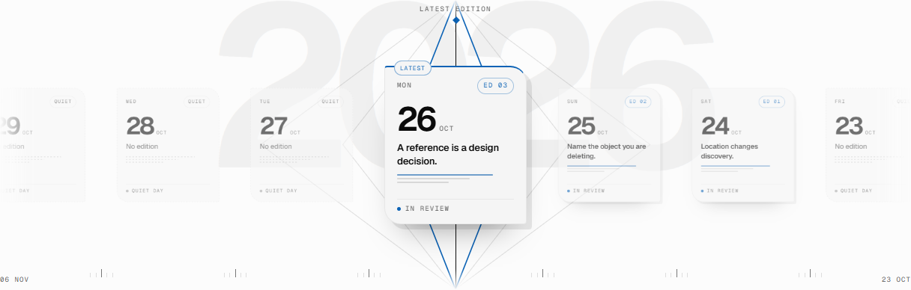
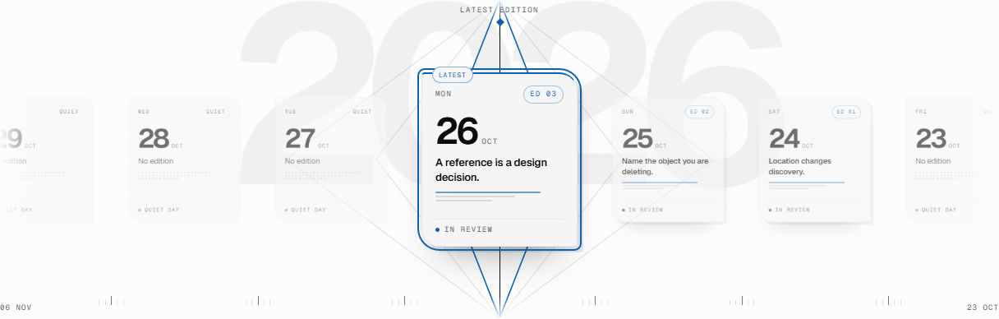
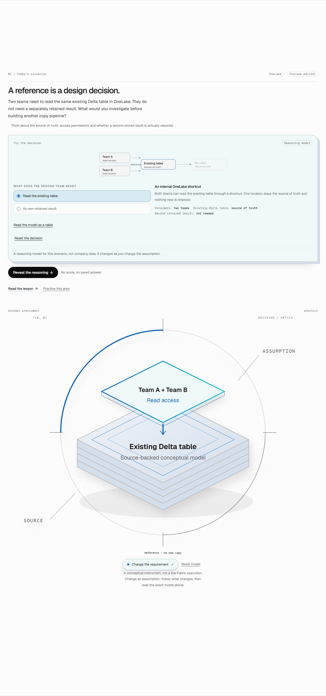
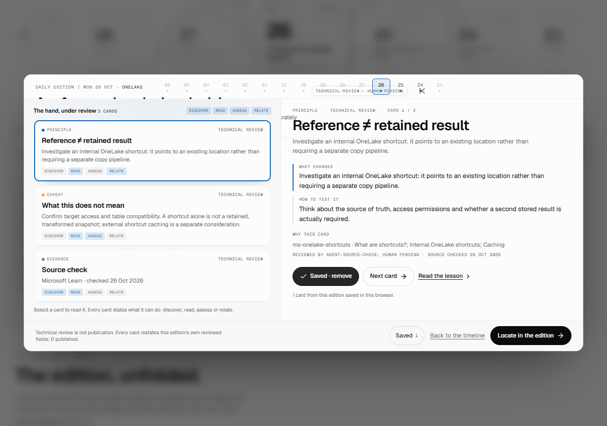
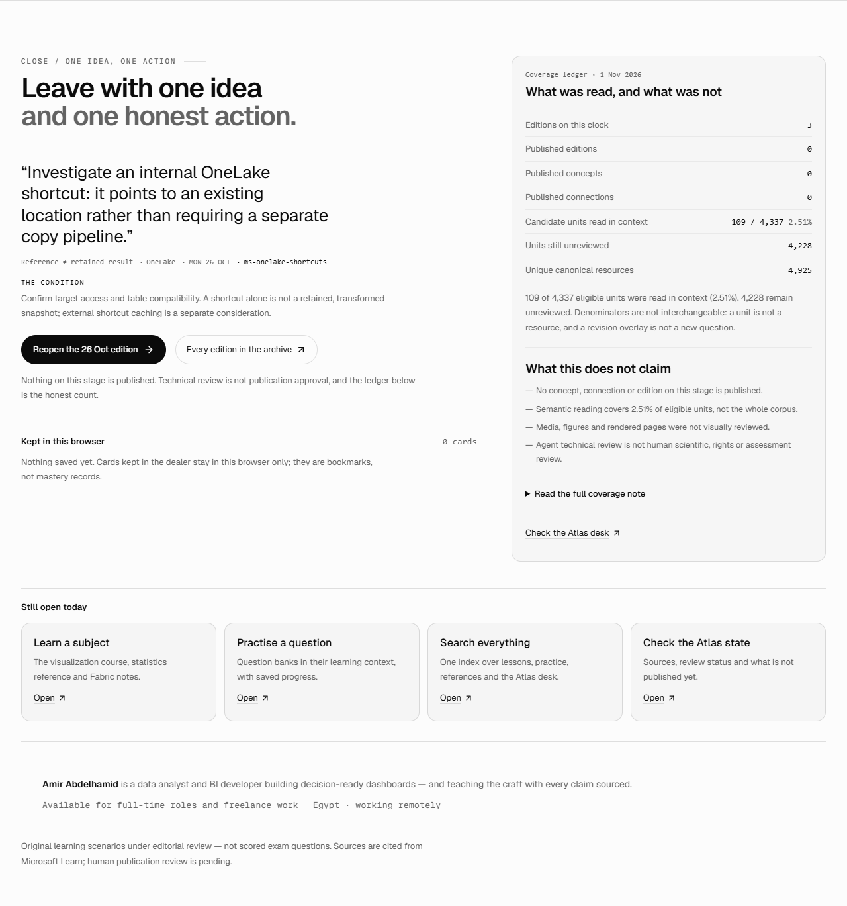
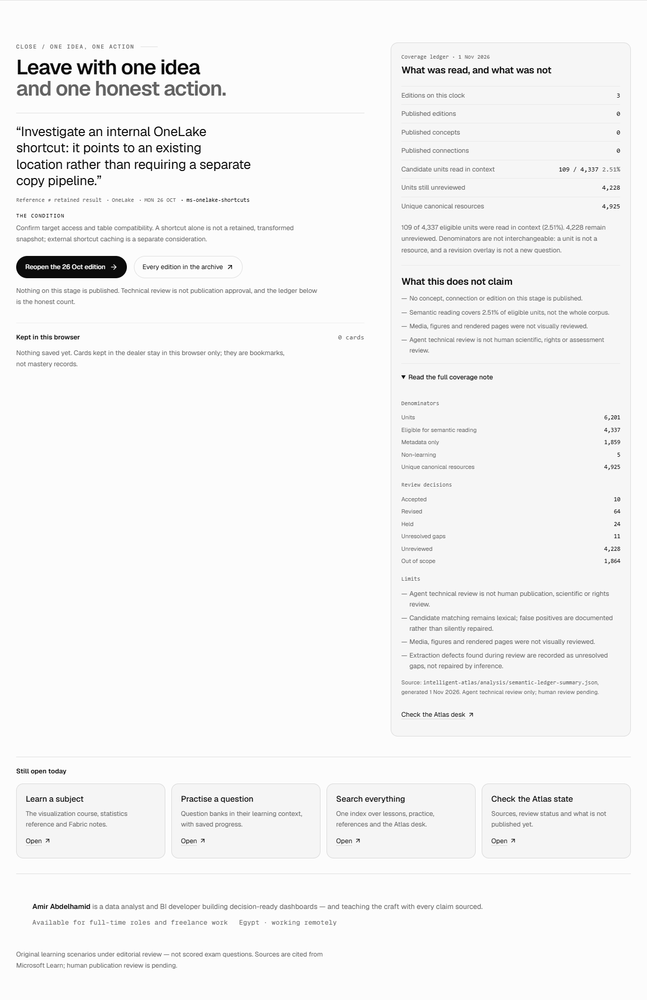
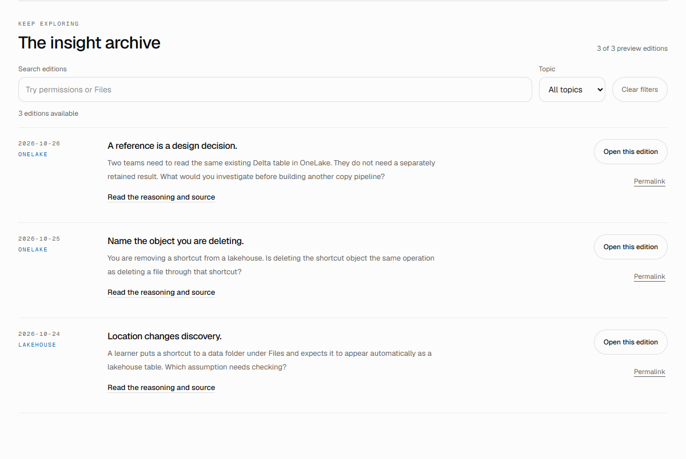
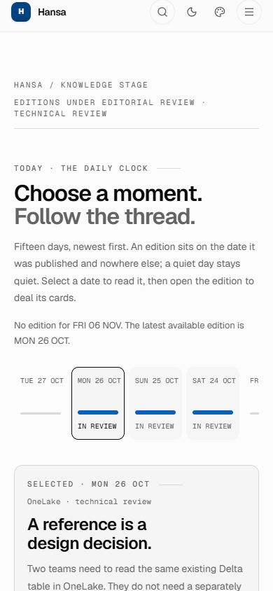
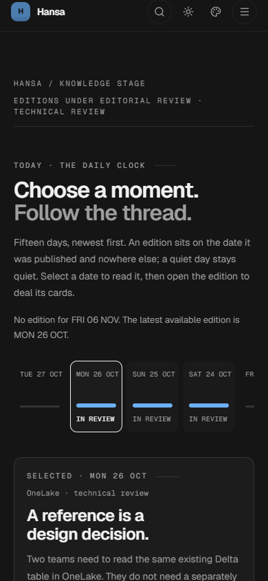
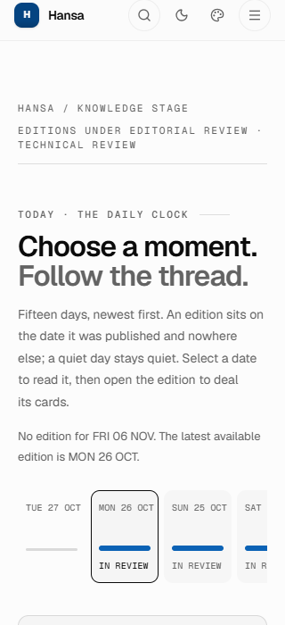
| LCP | 460 ms |
|---|---|
| CLS | 0 across 1 layout shifts |
| Requests | 46 |
| JavaScript | 849,206 B transferred |
| CSS | 204,578 B transferred |
| Total transferred | 1,259,931 B |
| DOM nodes | 1188 |
Local static server, warm cache, headless Edge. This is a regression signal, not field data: no throttling, no CDN, one machine.
86 of 86 checks pass. The table is the raw
result file, evidence/rc-e2e.json, rendered without editing.
| Result | Check | Detail |
|---|---|---|
| PASS | overflow 1280-light | 1280 <= 1280 |
| PASS | polish attr 1280-light | |
| PASS | fan shown 1280-light | fan=block strip=none |
| PASS | strip hidden 1280-light | strip=none |
| PASS | no prose below 11px 1280-light | [] |
| PASS | no text below 9px 1280-light | [] |
| PASS | 44px stage targets 1280-light | [] |
| PASS | axe 1280-light | 0 violations |
| PASS | overflow 1280-dark | 1280 <= 1280 |
| PASS | polish attr 1280-dark | |
| PASS | fan shown 1280-dark | fan=block strip=none |
| PASS | strip hidden 1280-dark | strip=none |
| PASS | no prose below 11px 1280-dark | [] |
| PASS | no text below 9px 1280-dark | [] |
| PASS | 44px stage targets 1280-dark | [] |
| PASS | overflow 1024-dark | 1024 <= 1024 |
| PASS | polish attr 1024-dark | |
| PASS | fan shown 1024-dark | fan=block strip=none |
| PASS | strip hidden 1024-dark | strip=none |
| PASS | no prose below 11px 1024-dark | [] |
| PASS | no text below 9px 1024-dark | [] |
| PASS | 44px stage targets 1024-dark | [] |
| PASS | axe 1024-dark | 0 violations |
| PASS | overflow 768-light | 768 <= 768 |
| PASS | polish attr 768-light | |
| PASS | fan hidden 768-light | fan=none strip=block |
| PASS | strip shown 768-light | strip=block |
| PASS | no prose below 11px 768-light | [] |
| PASS | no text below 9px 768-light | [] |
| PASS | 44px stage targets 768-light | [] |
| PASS | axe 768-light | 0 violations |
| PASS | overflow 390-dark | 390 <= 390 |
| PASS | polish attr 390-dark | |
| PASS | fan hidden 390-dark | fan=none strip=block |
| PASS | strip shown 390-dark | strip=block |
| PASS | no prose below 11px 390-dark | [] |
| PASS | no text below 9px 390-dark | [] |
| PASS | 44px stage targets 390-dark | [] |
| PASS | axe 390-dark | 0 violations |
| PASS | overflow 320-light | 320 <= 320 |
| PASS | polish attr 320-light | |
| PASS | fan hidden 320-light | fan=none strip=block |
| PASS | strip shown 320-light | strip=block |
| PASS | no prose below 11px 320-light | [] |
| PASS | no text below 9px 320-light | [] |
| PASS | 44px stage targets 320-light | [] |
| PASS | axe 320-light | 0 violations |
| PASS | route / | status=200 h1=1 |
| PASS | route /learn | status=200 h1=1 |
| PASS | route /practice/catalogue | status=200 h1=1 |
| PASS | route /learn/dp-600/atlas/ | status=200 h1=1 |
| PASS | route /about | status=200 h1=1 |
| PASS | route /prototype-c/ | status=200 h1=1 |
| PASS | prototype-c canonical | https://hansa.amir-portfolio.workers.dev/ |
| PASS | review route absent | status=404 |
| PASS | no console errors on routes | |
| PASS | fan editions present | 3 cards |
| PASS | fan select updates URL | http://127.0.0.1:4395/?insight=hansa-insight-shortcut-delete-v1 |
| PASS | fan aria-pressed | |
| PASS | fan arrow key moves selection | http://127.0.0.1:4395/?insight=hansa-insight-shortcut-discovery-v1 |
| PASS | dealer dialog opens | |
| PASS | dealer is modal | |
| PASS | dealer takes focus | |
| PASS | dealer card switch | PRINCIPLE TECHNICAL REVIEW Files versus Tables T -> CAVEAT TECHNICAL REVIEW What this does not mean |
| PASS | save confirms | Saved · remove |
| PASS | save persists locally | ["hansa-insight-shortcut-discovery-v1::caveat"] |
| PASS | escape closes dealer | |
| PASS | escape returns focus to the opener | {"tag":"BUTTON","text":"Open the edition","inDialog":false,"id":""} |
| PASS | closing lists the kept card | What this does not mean Caveat · SAT 24 OCT |
| PASS | kept card reopens in the dealer | CAVEAT TECHNICAL REVIEW What this does not mean Tables shortcuts require support |
| PASS | coverage disclosure opens | |
| PASS | coverage disclosure states limits | Denominators Units 6,201 Eligible for semantic reading 4,337 |
| PASS | archive search filters | 1 edition available |
| PASS | archive opens an edition | http://127.0.0.1:4395/?insight=hansa-insight-shortcut-delete-v1 |
| PASS | theme toggle flips | false -> true |
| PASS | accent menu opens | 7 options |
| PASS | accent menu is a labelled dialog | |
| PASS | accent menu closes on escape | |
| PASS | dealer deep link opens | |
| PASS | no candidate edge ids rendered | |
| PASS | no review neighbourhood block | |
| PASS | public stage states zero published | 0 published concepts · 0 published connections The |
| PASS | reduced motion: no web animations | 0 animations |
| PASS | reduced motion: no transitions | |
| PASS | LCP under 1200 ms | 460 ms |
| PASS | CLS is zero | 0 across 1 shifts |
concept:fabric:shortcut), rendered as a slug label, never as a claim./review/neighbourhood/ is a local-only route. The export step prunes it, so a static host answers 404; the route source stays in the repository for review builds.Human:, and validateDataset rejects it. The dry run asserts that rejection.| ID | Decision | Effect if deferred |
|---|---|---|
| D1 | Promote R3–R6 to the public default — technically verified, awaiting final owner sign-off | Rollback: rebuild with HANSA_*_REVIEW=0 for any slice; the M6 baseline is unchanged |
| D2 | Approve the six-record Atlas seed | Ships with an honest 0/0 graph |
| D3 | Run NVDA/VoiceOver, or waive it | Accessibility evidence stays automated-only, and the record says so |
| D4 | Deploy to Cloudflare Pages/Workers | Nothing public changes; no Cloudflare call is made by this work |
| D5 | Publish R1/R2 | The neighbourhood stays a review surface |
node scripts/build-rc.mjs # out-rc/ with four flags, out/ rebuilt clean node scripts/build-rc.mjs --check # re-verify an existing pair without rebuilding node scripts/serve-rc.mjs 4396 # serve the promoted export (mirror) node docs/release-readiness-20261106/rc-e2e.mjs node docs/release-readiness-20261106/capture-evidence.mjs node docs/release-readiness-20261106/make-rc-artifacts.mjs node scripts/verify-knowledge-atlas.mjs node scripts/verify-agent-reference.mjs